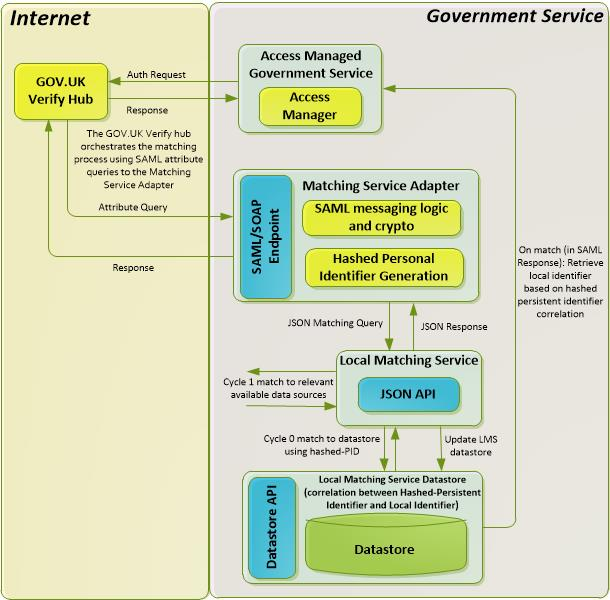
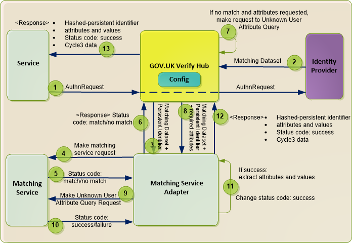

Matching Service¶
Overview¶
A matching service matches a user’s identity, which has been assured by GOV.UK Verify, to a local identifier in a government service’s records. It enables the government service to say that the John Smith trying to access the service is the same John Smith already held on file locally.
UK citizens do not have a unique identifier, so the government service needs to match other information about the user, such as address or date of birth, against the service’s records. The local identifier in the service’s records can be a known identifier such as an NHS number, or it can simply be an identifier that the service allocates to a user.
Note
Identity assurance cannot function without data matching.
It is the responsibility of government services to develop and implement the matching service that carries out this matching. We have provided this guidance for services to consider. We recognise that not all services have experience of matching verified identities to government data sources, and that the process of matching itself is often complex.
How a matching service works¶
A matching service matches the user to the correct record in a service’s database using a limited set of information, called the matching dataset, that has been verified by the identity provider.
The matching dataset contains:
- name
- address
- date of birth
- gender (optional)
It may also contain historical data if available, for example previous addresses.
Matching assured identities to records is likely to be complicated. A service needs to establish the most efficient and effective way of doing this, depending on the quality of data and how it is stored and managed.
Services have to carry out a risk-based match to find the account against which to match. For example, the matching service must be able to handle the following circumstances:
- When multiple records are found that could be a match (decide how to minimise risk of incorrect matching)
- When no match is found (decide whether to create a new record for the user)
Confidence scoring for matching¶
Confidence scoring is the score given to the data that matches; below is a greatly simplified example :
- 100% match confidence means that all elements of data fully match
- 80% match confidence might mean that first name, surname, and date of birth match, but address is showing a mismatch
Mismatches in data can happen, because, for example, the user typed the asserted information incorrectly or incorrect data is held in the service records. Service data may be incorrect for many reasons, for example if someone has moved house or changed their name but not informed the service.
Matching may be easier when there’s a unique identifier, eg a passport number, but this should not be used in isolation, and the process should always attempt a match to the matching dataset first.
It is up to the service to configure the level of match confidence that is needed, as attitudes to risk and matching requirements may be different for each service.
We recommend that the service analyse its local data sources in light of the matching strategy, so that the service can test and refine the strategy before launching alpha or beta services.
Example of matching request¶
- John Doe wishes to submit his Self Assessment tax return online to HMRC. He will attempt to sign in to the service using his identity provider.
- HMRC issues a request to the GOV.UK Verify hub to authenticate John Doe.
- The hub forwards the request on to John Doe’s chosen identity provider.
- John Doe provides his identity credentials.
- The identity provider confirms these credentials are correct and responds with identity information (matching dataset), which is returned to HMRC through the hub.
- The hub provides the matching service with the user’s persistent identifier and matching dataset.
- The Matching Service Adapter hashes the persistent identifier so that it is meaningless to other services and passes the hashed persistent identifier (PID) and the matching dataset to HMRC’S matching service.
- HMRC’s matching service tries to locate John Doe’s tax record in their internal dataset, using the hashed persistent identifier and the matching dataset.
Note
The hashed pid is specific to the combination of user, service and LPD. Please refer to Identity Assurance Hub Service SAML 2.0 Profile
The following diagram gives an overview of the matching process:
Matching is initiated when a user has successfully authenticated at an identity provider in response to a request from you. The hub receives the identity provider’s response, containing:
- identity matching data, known as the matching dataset
- unique persistent identifier for the identity, created by the identity provider
The hub passes this response to the Matching Service Adapter. The Matching Service Adapter essentially converts the SAML used by the hub into the JSON used by your matching service.
The Matching Service Adapter hashes the persistent identifier to create an identifier that is meaningless to other services, and then sends a JSON query to your matching service which tries to find a match for the user’s identity in your service’s records. The matching service attempts 3 cycles of matching as described below.
NEED TO INTEGRATE THIS (COPIED OVER FROM HOW A MS WORKS IN TECH GUIDE)
The hub sends the matching dataset to the matching service via the Matching Service Adapter. Once matching has taken place, the user is directed to the correct record within the service.
There are potentially 3 cycles of matching, see Matching cycles . If, after these 3 cycles, there’s no match, the service can optionally decide to create a new account for the user. See Creating user accounts for more information.
Build a matching service¶
Matching strategy¶
The matching strategy should take into account:
- quality of available data
- completeness of local data sources
- confidence level required in a successful match
- how to score the confidence of a match (based on multiple criteria)
Take into account the following considerations when defining your matching service:
- Understand the different types of users
- Prepare for matching with customer data aggregation and data cleansing
- Define the rules for successful matching, for example:
- matching synonyms, for example matching personal names of William and Bill
- possible transposition of multiple part names, for example Anna Marie, Jane and Anna, Marie Jane
- possible transposition errors of day and month in the date of birth, for example 04/10/78 and 10/04/78
- Specify additional attributes that can be used to match identities reliably and securely, for example; passport number. The matching service can then prompt the hub to request additional attributes from the identity provider
- Understand, from both a business and a technical view, what level of ‘fuzzy matching’ is acceptable and possible. The service can apply fuzzy matching when an exact match is not found; it allows a match that, although not 100%, is above a service-defined threshold matching percentage
- Define the fuzzy matching rules
- Manage the risk of incorrect matching and decide what happens if multiple records are found or if there are no matches (user not found). If there are no matches, you can optionally create a new account.
Note
- The matching strategy has to be shared/agreed/whatever it is with engagement leads
- For more guidance, see Matching strategy example.
Matching strategy example¶
An example matching strategy for a service is outlined in the following steps. In this example, the service’s local data source is called local-data.
- Identify potential matches by trying to match the matching dataset to the service’s local records (local-data). The first attempt at matching looks for a 100% match to full name and date of birth. If there are no matches, it widens as follows:
Request the set of records (from local-data) that match both surname and date of birth (from the matching dataset).
Perform the following matches:
Note
Include matches to historic names in the matching dataset, if provided.
- surname forename 1 forename 2 date of birth
Note
If forename 2 does not exist, skip this match
- surname forename 1 date of birth
- surname date of birth
- Look for a match to historic information in the matching dataset. As for step 1, but match to historic names if provided in the matching dataset.
- Look for a match to historic information in local-data (if available). As for step 1, but match current matching dataset names to name history in local-data.
- Match to partial data and synonyms. As for step 1, but with synonyms applied to names from the matching dataset. For example Mike rather than Michael, Steven rather than Steve or Stephen.
If there’s still no match, try further matching to surname and initials, for example surname, initial 1, date of birth.
- If there are matches, apply the outcode element of the postcode’s first element for example; PO1, to increase match confidence (match score). Of the remaining (potential) matches, try to match to:
- Full postcode and first 6 characters of address line 1.
- Outcode element of postcode and first 6 characters of address line 1.
- Full postcode only.
- If step 5 results in one or more matches:
- If there’s a single match and the match confidence score is over the acceptable limit, assume a match to the matching dataset.
- If there are multiple matches over the confidence score, proceed to cycle 3 matching (user-asserted match). See GOV.UK Verify Architecture Overview for a description of the 3 matching cycles.
- If all matches are below the match confidence threshold, proceed to address and date of birth partial matching.
- Look for address and date of birth partial matching. Date of birth is sometimes incorrectly recorded so the service could perform additional address level matching to find potential matches, as follows:
- Retrieve records that match the following criteria:
- union (surname, outcode (first element of postcode)
- surname
- first 6 characters of address (line 1)
- With these records, attempt the following matches at the matching service:
- surname
- forename 1
- forename 2
- MDS-YYYY-DD-MM where MDS is matching dataset and YYYY-DD-MM is year-day-month
If forename 2 does not exist, skip this match
- surname forename 1, date of birth
- surname, date of birth
Matching cycles¶
The matching process currently consists of three matching cycles in which you try to match the user to the correct record:
- hashed persistent identifier match (cycle 0)
- matching dataset match (cycle 1)
- user asserted match (cycle 3)
Cycle numbers refer to the sequence of attempts made to find a matching account or local identifier for a particular verified identity as expressed in an assertion of matching data from an identity provider.
Cycle 0 (Persistent identifier match)
This allows the matching service to match the hashed PID for a user to hashed PIDs held in the matching service against previous matches. This cycle is a shortcut for full matching (cycles 1/2/3).
Each identity provider assigns a unique persistent identifier to a user. In the first cycle of matching, the matching service tries to match this persistent identifier in the mapping table. This only succeeds if the user has previously been matched by the matching service with the same identity provider, as the previous transaction would have written the persistent identifier to the mapping table.
Cycle 1 (Matching dataset match)
This checks for a match in the user’s identity in the transaction’s local store, using the matching dataset to try and achieve a match.
The identity provider supplies the matching dataset if the persistent identifier cycle 0 attempt does not result in a match. The matching dataset information can then be used to search for the record. The matching service searches your databases for a record with the same name / address / date of birth / gender details (using history data if available in the matching dataset). The matching service can use any or all of these details to attempt to find a match, as determined by the matching rules of the service provider’s matching service. If a unique match is found, the hashed persistent identifier is written to the mapping table with the corresponding local identifier to enable cycle 0 matching to occur during subsequent transactions.
Cycle 2
This is an additional matching cycle where attributes gained from attribute providers are used to enhance the matching process.
Note
Cycle 2 is currently not supported by GOV.UK Verify.
Cycle 3 (User-asserted match)
This asks the user for additional information for the matching service to complete a match. This cycle is defined in the service provider policy and may not be required for all matches.
If more than one potential match is found, the user is asked for some additional information (self-asserted attributes) so that the matching service can refine the match, for example Unique Taxpayer Reference (collected by the hub). This cycle is defined in the service provider policy and may not be required for all matches.
Creating user accounts¶
If all three matching cycles fail to find a match for the user’s identity in your records, you can choose to create a new account for the user based on the hashed persistent identifier and a subset of specified attributes from the matching dataset returned by the identity provider.
Note
Creating new accounts is optional and, if you decide to do this, you must ensure your matching service supports this feature.
Minimum requirements for a matching service¶
- Build your matching service to support creation of new accounts if matching fails.
- Ensure your matching service exposes the User Account Creation URI endpoint. This is the fully qualified URI to which the hub makes Unknown User Attribute Query requests (message flow number 7 in the message flow diagram below). This endpoint must accept the following JSON:
[{
"hashedPid": "<some string value>",
"levelOfAssurance": "<the level of assurance, e.g. LEVEL_1>"
}]`
You must also specify this URI on the Request access to an environment form that you fill in when requesting access to the integration and production environments. This form is available from your engagement lead.
- Make sure the User Account Creation URI endpoint returns the following JSON, choosing success or failure as appropriate:
[{
"result": "<success or failure>"
}]`
Note
“success” and “failure” are case sensitive and must be lower case, as shown in the above example.
- Configure your Matching Service Adapter to create new user accounts by supplying the User Account Creation URI in unknownUserCreationServiceUri: in the configuration file.
- See Matching Service Adapter for a description of how to configure the Matching Service Adapter.
Provide the hub with a list of the attributes you want to be returned to your service when creating new user accounts. The options are:
FIRST_NAME
FIRST_NAME_VERIFIED
MIDDLE_NAME
MIDDLE_NAME_VERIFIED
SURNAME
SURNAME_VERIFIED
DATE_OF_BIRTH
DATE_OF_BIRTH_VERIFIED
CURRENT_ADDRESS
CURRENT_ADDRESS_VERIFIED
CYCLE_3`
Note
You define your required attributes on the Request access to an environment form.
User account creation message flow The following diagram shows the message flow for user account creation (happy path), followed by an outline description of the process.
User account creation message flow diagram
- Message flow number 1 in the above diagram: Your service sends a request to the GOV.UK Verify hub to authenticate the user’s identity, forwarded by the GOV.UK Verify hub to the identity provider.
- The identity provider authenticates the user and sends the user’s matching dataset (MDS) to the GOV.UK Verify hub.
- The GOV.UK Verify hub passes the matching dataset and the persistent identifier (PID) to the Matching Service Adapter.
- The Matching Service Adapter hashes the persistent identifier (#PID) and forwards it with the matching dataset to your matching service. Your matching service tries to find a match for the user in your records, using cycle 0, then cycle 1 if necessary, and then cycle 3 if necessary.
Note
The Matching Service Adapter hashes the persistent identifier to prevent it being used by other services, as hashing makes it meaningless to them.
- Your matching service sends a match or no match response to the Matching Service Adapter.
- The Matching Service Adapter forwards the match or no match response to the GOV.UK Verify hub.
- If there’s no match, even after the user-asserted match (cycle 3), the GOV.UK Verify hub checks your matching service to see if you wish to receive certain attributes (specified by you) from the matching dataset so that you can create a new user account, and then makes an Unknown User Attribute Query request.
- If your matching service supports creating new user accounts, the GOV.UK Verify hub passes the hashed persistent identifier and level of assurance to the Matching Service Adapter. The GOV.UK Verify hub passes on the level of assurance to prevent identity theft via fake uplifting, (the act of being ‘lifted’ from one level of assurance to a higher one).
- The Matching Service Adapter forwards the hashed persistent identifier and level of assurance to your matching service. Your matching service then typically creates a new record for the user (called a local identifier), linking the hashed persistent identifier and level of assurance to that record. However, it’s up to you to define what your matching service does with the hashed persistent identifier and level of assurance.
Note
Your matching service must not add attributes to your local records at this point.
- If your matching service successfully creates a new account (or does whatever you specify), it returns a success response to the Matching Service Adapter. If your matching service fails to create a new account (or fails to do whatever you specify), it returns a failure response to the Matching Service Adapter (eg because the hashed persistent identifier already exists in the system). It returns aurn:oasis:names:tc:SAML:2.0:status:Responder and no attributes are extracted from the matching dataset.
- The Matching Service Adapter extracts your specified attributes from the matching dataset (if available)
- The Matching Service Adapter returns these attributes to the GOV.UK Verify hub.
- If the response is success, the GOV.UK Verify hub sends your service the attributes and hashed persistent identifier. Your service uses the hashed persistent identifier to look for a mapped local identifier and then creates a new account, associating the attributes with the local identifier.
Note
To create a user account, the Matching Service Adapter must send the attributes and hashed persistent identifier to your service via the GOV.UK Verify hub (message flows 12 and 13). This is because of user control (the user must give their informed consent to the information being sent) and data minimisation (the service only receives the restricted set of attributes it needs, not the full matching dataset). For more information see the Identity Assurance Principles.
Common problems¶
Exact matching of identity data such as name, address and date of birth is rarely possible because of the following:
- transcription errors
- spelling mistakes
- user-asserted data from previous records may include typos or errors
Services should be aware of this and devise a matching strategy that deals with these issues. Some suggestions are as follows:
- Widen initial queries (or traces) to ensure that relevant records are not missed or false positives returned. For example, search for surname, date of birth and postcode first, then examine the results to identify the required record with further scored matching.
- Split names into separate forename(s) and surname elements and try synonym matching against combinations of forename and surname, possibly transposing them, for example; surname, forename 1.
This is to overcome the common situation where people refer to themselves using shortened versions of their name or nicknames, as opposed to their legal name. For example, Mike Smith, Michael Smith and David Michael Smith may all be different representations of the same person (usual name, official name and legal name, for example; from a passport.
Further guidance¶
Please Contact the GOV.UK Verify team or your engagement lead if your service needs more help with building a matching service.
CATH COMMENT : NOT SURE WHERE TO PUT THIS OR WHETHER IT IS NEEDED
Importance of a matching service¶
The Identity Assurance Hub Service SAML 2.0 Profile states that a service must nominate a matching service, even if it doesn’t need to perform matching. This is because the matching service also performs other key functions. The matching service also:
- Creates the hashed persistent identifier
- Creates the final assertion as sent to the service
- Acts as the trust anchor for the service (signs the assertion)
- Attempts to find a local identifier that means something to the service (optionally)